<!doctype html>
<html lang="en">

	<head>
		<meta charset="utf-8">

		<title>Elektronische installatietechnieken - Les 7 Talstelsels</title>

		<meta name="description" content="Elektronische installatietechnieken - Les 7 Talstelsels: decimaal, binair, octaal, hexadecimaal">
		<meta name="author" content="Steven Charpentier">

		<meta name="apple-mobile-web-app-capable" content="no">
		<meta name="apple-mobile-web-app-status-bar-style" content="black-translucent">

		<meta name="viewport" content="width=device-width, initial-scale=1.0">

		<link rel="stylesheet" href="dist/reset.css">
		<link rel="stylesheet" href="dist/reveal.css">
		<link rel="stylesheet" href="dist/theme/dracula.css" id="theme">
		<link rel="stylesheet" href="APstyle.css">

		<!-- Theme used for syntax highlighting of code -->
		<link rel="stylesheet" href="plugin/highlight/monokai.css">
	</head>

	<body>

		<div class="reveal">
            <div class="slides">
    <section data-markdown>
  <script type="text/template">
### Talstelsels
## Decimaal, binair, octaal, hexadecimaal

---

## Wat is een talstelsel?

- Een **afspraak** over hoe je een hoeveelheid opschrijft <!-- .element: class="fragment" -->
- Hoeveelheid (appels in een mand) ≠ schrijfwijze (Arabisch, Romeins, turfjes,...) <!-- .element: class="fragment" -->
- Dezelfde hoeveelheid kan op veel manieren genoteerd worden <!-- .element: class="fragment" -->

---

## De grote troef van Arabische cijfers

- Ingevoerd in Europa in de 16e eeuw, door kooplieden en bankiers <!-- .element: class="fragment" -->
- Het grote idee: een cijfer voor **nul** <!-- .element: class="fragment" -->
- De **positie** van een cijfer bepaalt mee zijn betekenis: € 209.642 <!-- .element: class="fragment" -->
- Dit heet een **positioneel talstelsel** <!-- .element: class="fragment" -->

---

## Weetje: het Romeinse talstelsel, niet-positioneel

<div style="display:flex;align-items:center;gap:30px;font-size:0.75em">

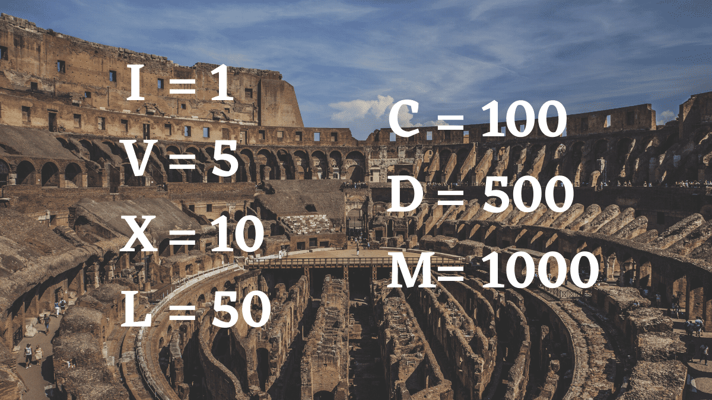

- I, V, X, L, C, D, M = 1, 5, 10, 50, 100, 500, 1000 <!-- .element: class="fragment" -->
- **Niet positioneel**: de waarde van een cijfer hangt niet af van zijn plaats <!-- .element: class="fragment" -->
- Je **telt op** (VI = 5+1 = 6), tenzij een kleiner cijfer vóór een groter staat: dan **trek je af** (IV = 5-1 = 4) <!-- .element: class="fragment" -->
- Geen symbool voor **nul**, en optellen/vermenigvuldigen is omslachtig <!-- .element: class="fragment" -->
- Precies daarom wonnen de Arabische cijfers het pleit <!-- .element: class="fragment" -->

</div>

---

## Weetje: het talstelsel dat je niet meer kan rekenen

Er is een talstelsel dat we allemaal gebruiken, maar waar bijna niemand nog actief **mee rekent**:

<div class="fragment">

het twaalftallig, of **duodecimaal**, stelsel. Kijk naar je klok: 12 uur, 2 keer per dag. 12 maanden in een jaar.

Een populaire verklaring hiervoor gaat terug tot de Babyloniërs: tel met je duim de 3 kootjes van je 4 vingers af, dat geeft 12 per hand. Hou met je andere hand bij hoeveel keer je tot 12 geraakt, en je komt tot 60 (vandaar ook hun 60-tallig stelsel, nog te zien in onze minuten en seconden).

</div>

---

## Definities: cijfer, getal, grondtal

- **Cijfer**: één numeriek symbool <!-- .element: class="fragment" -->
- **Getal**: één of meerdere cijfers samen <!-- .element: class="fragment" -->
- **Grondtal**: het aantal verschillende cijfers van een talstelsel <!-- .element: class="fragment" -->
- Genoteerd rechts onderaan het getal: 4378₁₀ <!-- .element: class="fragment" -->

---

## Definities: positioneel talstelsel

- De **positie** van een cijfer bepaalt zijn **gewicht** <!-- .element: class="fragment" -->
- 1234 ≠ 1324, exact dezelfde cijfers, andere waarde <!-- .element: class="fragment" -->
- Uiterst rechts: minst beduidend (LSD) — uiterst links: meest beduidend (MSD) <!-- .element: class="fragment" -->
- Gewicht = grondtal verheven tot de macht van de positie (rechts = positie 0) <!-- .element: class="fragment" -->

---

## Definities: waarde, en een valkuil

- **Waarde** = som van elk cijfer x zijn gewicht <!-- .element: class="fragment" -->
- Nullen **toevoegen of weglaten** mag je vrij: <!-- .element: class="fragment" -->
  - **Links** van het getal: 123 = 000123 <!-- .element: class="fragment" -->
  - **Rechts**, als het na de komma is: 431,16 = 431,1600 <!-- .element: class="fragment" -->

---

## Decimaal (grondtal 10)

- Het alledaagse talstelsel <!-- .element: class="fragment" -->
- 10 cijfers: 0 t.e.m. 9 <!-- .element: class="fragment" -->

---

## Binair (grondtal 2)

- 2 cijfers: 0 en 1 <!-- .element: class="fragment" -->
- Een geheugenelement van een computer kent maar 2 toestanden <!-- .element: class="fragment" -->
- Elk cijfer = 1 **bit** <!-- .element: class="fragment" -->

| Bits | Mogelijkheden | Naam |
|---|---|---|
| 1 | 2 | bit |
| 4 | 16 | nibble |
| 8 | 256 | byte |
| 16 | 65 536 | word |

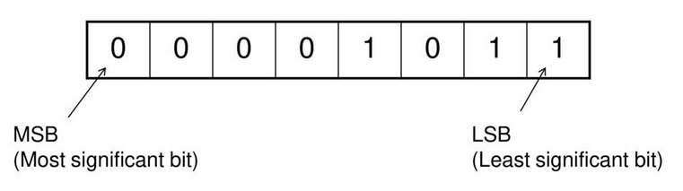

---

## Weetje

> "Er zijn 10 soorten mensen: zij die binair begrijpen, en zij die het niet begrijpen."

Een klassieke programmeursgrap: lees die "10" binair, en hij klopt wél (10₂ = 2₁₀)

---

## Octaal (grondtal 8)

- 8 cijfers: 0 t.e.m. 7 <!-- .element: class="fragment" -->
- Populair door eenvoudige conversie met binair <!-- .element: class="fragment" -->
- 8 = 2³ → elke **3 bits** = 1 octaal cijfer <!-- .element: class="fragment" -->

---

## Octaal in het echt: Linux-bestandsrechten

- `chmod 755 bestand` ken je misschien al van Linux/Unix, en anders leer je het nog wel bij besturingssystemen 😉 <!-- .element: class="fragment" -->
- Elk octaal cijfer = 3 bits = lezen/schrijven/uitvoeren (rwx) <!-- .element: class="fragment" -->
- **7** = 111 = rwx (alles mag), **5** = 101 = r-x (lezen + uitvoeren) <!-- .element: class="fragment" -->
- `755` = eigenaar alles, anderen enkel lezen en uitvoeren <!-- .element: class="fragment" -->

---

## Hexadecimaal (grondtal 16)

- 16 "cijfers": 0-9, plus **A, B, C, D, E, F** (10 t.e.m. 15) <!-- .element: class="fragment" -->
- 16 = 2⁴ → elke **4 bits** = 1 hexadecimaal cijfer <!-- .element: class="fragment" -->
- 1111₂ wordt gewoon F: veel overzichtelijker <!-- .element: class="fragment" -->
- Herkenbaar aan het voorvoegsel `0x`, bv. `0x6F` <!-- .element: class="fragment" -->

---

## Hexadecimaal in het echt: kleurcodes

- Een webkleur zoals `#FF5733` is hexadecimaal <!-- .element: class="fragment" -->
- 2 cijfers rood, 2 groen, 2 blauw: elk van 00 (geen) tot FF (vol, = 255) <!-- .element: class="fragment" -->
- `#FF5733` = rood 255, groen 87, blauw 51 → een felle oranje <!-- .element: class="fragment" -->
- Ook ASCII werkt zo: de letter **A** is decimaal 65, hexadecimaal **0x41** <!-- .element: class="fragment" -->

---

## Hexadecimaal in het echt: hexspeak

- Programmeurs gebruiken soms hexadecimale getallen die als **woorden** leesbaar zijn <!-- .element: class="fragment" -->
- Bekendste voorbeeld: **0xDEADBEEF**, gebruikt als "magic number" om een geheugenfout te markeren <!-- .element: class="fragment" -->
- Duikt dat adres op in een debugger, dan weet een ontwikkelaar meteen: hier ging iets grondig mis <!-- .element: class="fragment" -->
- Andere bekende voorbeelden: `0xCAFEBABE`, `0xBADC0FFEE` <!-- .element: class="fragment" -->

---

## Base64 (grondtal 64): leren herkennen, niet rekenen

<div style="display:flex;align-items:center;gap:30px;font-size:0.75em">

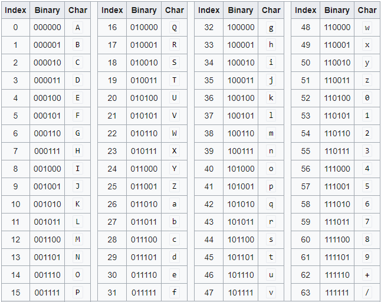

- 64 symbolen: A-Z, a-z, 0-9, plus 2 extra tekens (+ en /) <!-- .element: class="fragment" -->
- Elk teken = 6 bits → 3 bytes (24 bits) worden netjes 4 tekens <!-- .element: class="fragment" -->
- **Geen getallenstelsel om hoeveelheden weer te geven**, maar een **codering** <!-- .element: class="fragment" -->
- Doel: willekeurige binaire data (een foto, een bestand) **veilig als tekst** versturen <!-- .element: class="fragment" -->
- Eindigt soms op `=` of `==`: opvulling als het laatste stukje niet past <!-- .element: class="fragment" -->

</div>

---

## Base64 in het echt

- Een afbeelding rechtstreeks in HTML/CSS: `data:image/png;base64,iVBORw0KG...` <!-- .element: class="fragment" -->
- Een inlog-token (JWT) op het web: drie stukken tekst, elk base64 <!-- .element: class="fragment" -->
- Bijlages in e-mail (MIME) worden al decennialang zo verstuurd <!-- .element: class="fragment" -->
- Herken je dit patroon (lange tekst, letters/cijfers, soms `=` op het einde)? Grote kans dat het base64 is <!-- .element: class="fragment" -->

---

## BCD: Binary Coded Decimal

- Elk **decimaal cijfer apart** omzetten naar 4 bits <!-- .element: class="fragment" -->
- 935 → 1001 0011 0101 (9, 3, 5 elk apart) <!-- .element: class="fragment" -->

---

## De omzettingstabel (van buiten kennen)

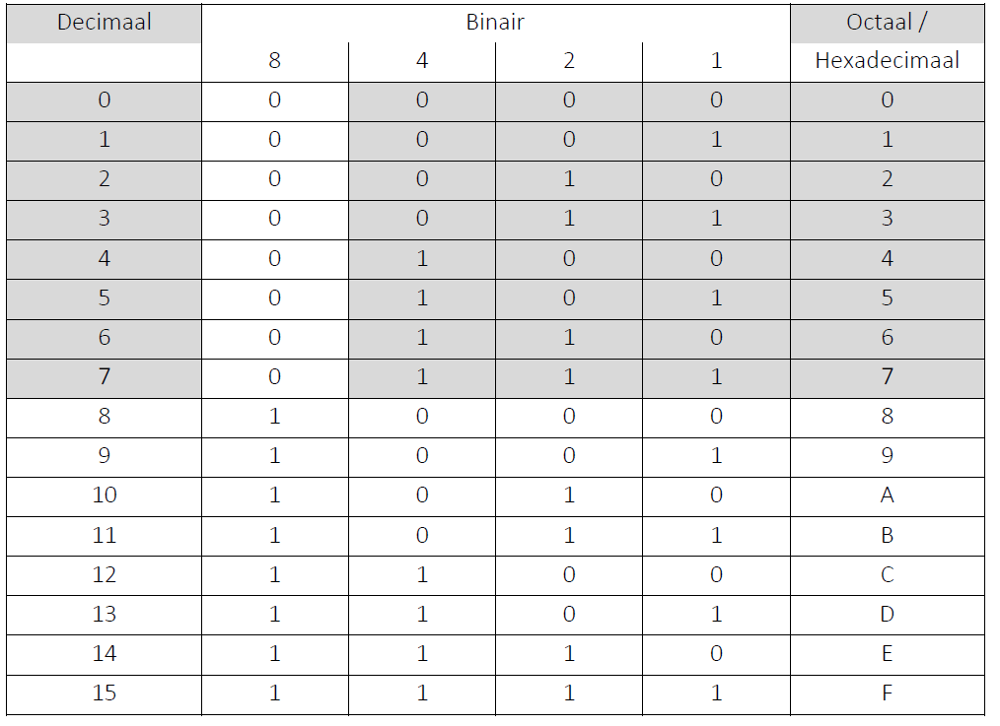

---

## Naar decimaal: binair voorbeeld

<pre><code>1100110(2) = 1.2⁶ + 1.2⁵ + 0.2⁴ + 0.2³ + 1.2² + 1.2¹ + 0.2⁰
           = 64 + 32 + 0 + 0 + 4 + 2 + 0
           = 102(10)</code></pre>

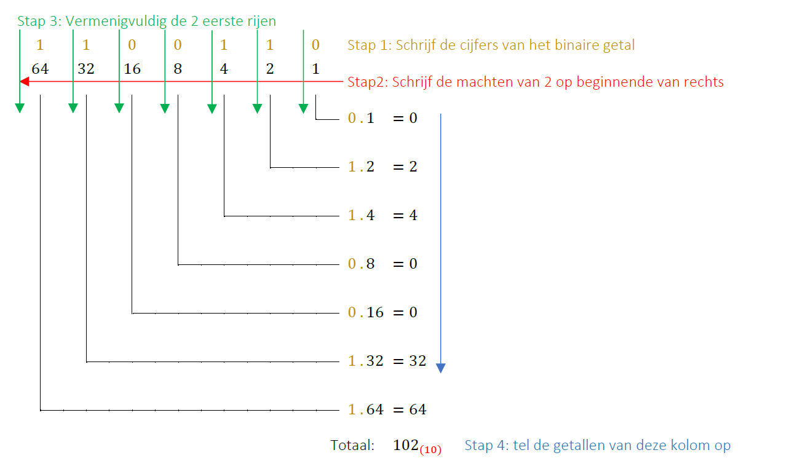

---

## Naar decimaal: hexadecimaal voorbeeld

<pre><code>1AB(16) = 1.16² + A.16¹ + B.16⁰
        = 256 + 160 + 11
        = 427(10)</code></pre>

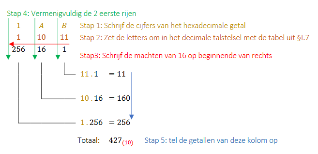

- Zelfde logica voor octaal, met machten van 8 <!-- .element: class="fragment" -->

---

## Van decimaal naar een ander talstelsel

- **Herhaaldelijk delen** door het grondtal, rest telkens noteren <!-- .element: class="fragment" -->
- Stop zodra het quotiënt 0 is <!-- .element: class="fragment" -->
- Lees de resten van **onder naar boven** <!-- .element: class="fragment" -->

| Deling | Quotiënt | Rest |
|---|---|---|
| 102 / 2 | 51 | 0 |
| 51 / 2 | 25 | 1 |
| 25 / 2 | 12 | 1 |
| 12 / 2 | 6 | 0 |
| 6 / 2 | 3 | 0 |
| 3 / 2 | 1 | 1 |
| 1 / 2 | 0 | 1 |

→ 102₁₀ = 1100110₂

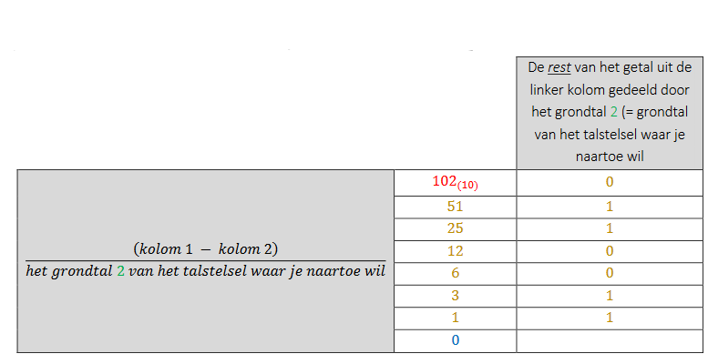

---

## Verkorte truc (enkel binair)

- Getal **oneven** → rest is 1 <!-- .element: class="fragment" -->
- Getal **even** → rest is 0 <!-- .element: class="fragment" -->
- Bespaart het voluit delen <!-- .element: class="fragment" -->

---

## Ook naar octaal en hexadecimaal

- Zelfde methode, delen door **8** respectievelijk **16** <!-- .element: class="fragment" -->

<div style="display:flex;justify-content:center;gap:30px">
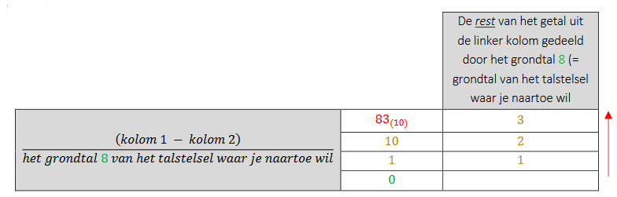
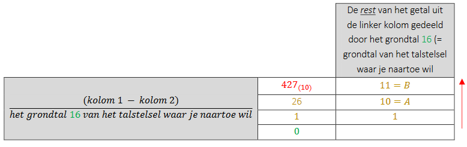
</div>

---

## Rechtstreeks tussen binair en octaal/hex

- 8 = 2³, 16 = 2⁴ → geen omweg via decimaal nodig <!-- .element: class="fragment" -->
- **Binair → octaal/hex**: groepeer in **3, respectievelijk 4 bits**, van rechts (links te weinig? vul aan met nullen) <!-- .element: class="fragment" -->
- **Octaal/hex ↔ binair**: omgekeerd, elk cijfer apart <!-- .element: class="fragment" -->
- **Octaal ↔ hex**: altijd via binair, geen rechtstreekse weg <!-- .element: class="fragment" -->

---

## Voorbeeld: binair naar hexadecimaal en octaal

<pre><code>1100110(2) = 0110 0110   (aanvullen tot groepjes van 4)
           =  6    6
           = 66(16)</code></pre>

<div style="display:flex;justify-content:center;gap:30px;align-items:center">
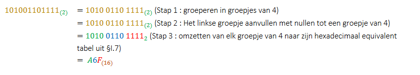
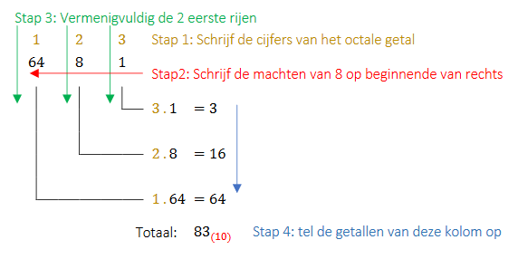
</div>

---

## En omgekeerd: octaal naar binair

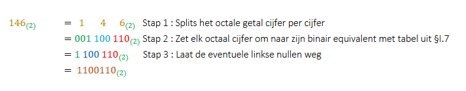

- Hexadecimaal naar binair werkt volgens exact dezelfde logica, met groepjes van 4 <!-- .element: class="fragment" -->

---

## Overzicht: alle conversies op één plaats

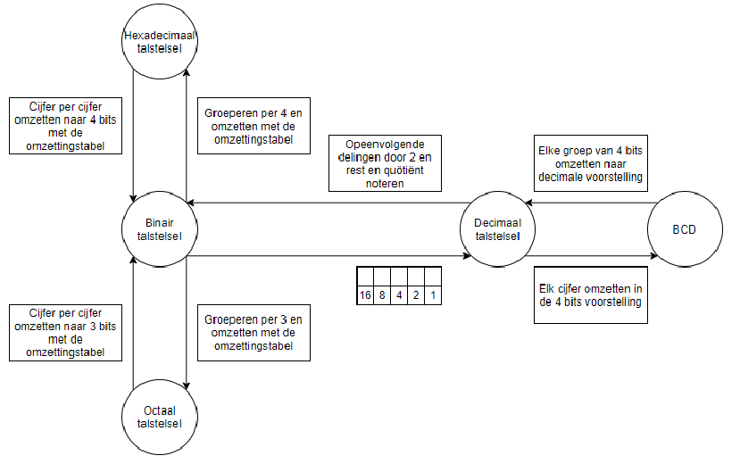

---

## Binair optellen

- Werkt zoals decimaal optellen, met **overdracht** (carry) <!-- .element: class="fragment" -->
- 1 + 1 = 10 in binair (decimaal: 2) → schrijf 0, draag 1 over <!-- .element: class="fragment" -->

<pre><code>  01011011   (91)
+ 00001101   (13)
  --------
  01101000   (104)</code></pre>

---

## Negatieve getallen: een computer kent geen minteken

- Drie opeenvolgende technieken, elk met een eigen afspraak <!-- .element: class="fragment" -->
- Telkens via het meest linkse bit: de **tekenbit** <!-- .element: class="fragment" -->

---

## 1. Tekenbit

- Meest linkse bit = enkel het teken (0 = positief, 1 = negatief) <!-- .element: class="fragment" -->
- Probleem: 0 heeft **twee** voorstellingen (+0 en -0) <!-- .element: class="fragment" -->
- Probleem: optellen van + en - geeft een **fout** resultaat <!-- .element: class="fragment" -->

---

## 2. 1-complement

- Negatief van een getal = **alle bits inverteren** <!-- .element: class="fragment" -->
- Lost het optelprobleem gedeeltelijk op <!-- .element: class="fragment" -->
- Probleem blijft: 0 heeft nog steeds twee voorstellingen <!-- .element: class="fragment" -->

---

## 3. 2-complement (de echte oplossing)

- 1-complement berekenen, en er **1** bij optellen <!-- .element: class="fragment" -->
- Gebruikt in **alle** hedendaagse computers <!-- .element: class="fragment" -->

<pre><code>Binair van 7:          00000111
1-complement (invert):  11111000
2-complement (+1):      11111001</code></pre>

- 0 heeft nu maar **1** voorstelling <!-- .element: class="fragment" -->
- Optellen van + en - werkt correct (overflow-bit weglaten) <!-- .element: class="fragment" -->

---

## 2-complement terug naar decimaal

1. Tekenbit 0? → positief getal, rechtstreeks omzetten
2. Tekenbit 1? → negatief: inverteer alle bits, tel er 1 bij op, zet om naar decimaal, zet er een minteken voor

---

## Weetje: wat als je bits opraken?

- Bij 8 bits met tekenbit: bereik van **-128 tot +127**, ga je daarover dan **wrapt** het getal om (van +127 naar -128) <!-- .element: class="fragment" -->
- Hetzelfde probleem, maar dan met 32 bits, veroorzaakt het **Year 2038-probleem** <!-- .element: class="fragment" -->
- Veel oudere systemen tellen de tijd in seconden sinds 1970, in 32 bits <!-- .element: class="fragment" -->
- Op **19 januari 2038 om 03:14:07** loopt die teller vol, en zonder update springt de klok terug naar **1901** <!-- .element: class="fragment" -->

---

## Waarom dit alles kennen?

- De basis van **digitale logica**: exact deze 0'en en 1'en <!-- .element: class="fragment" -->
- Hexadecimaal kom je overal tegen: bestandspermissies (Unix/Linux), geheugenadressen, microcontrollers, kleurcodes <!-- .element: class="fragment" -->

  </script>
</section>
</div></div>

		<script src="dist/reveal.js"></script>
		<script src="plugin/zoom/zoom.js"></script>
		<script src="plugin/notes/notes.js"></script>
		<script src="plugin/search/search.js"></script>
		<script src="plugin/markdown/markdown.js"></script>
		<script src="plugin/highlight/highlight.js"></script>
		<script>

			// Also available as an ES module, see:
			// https://revealjs.com/initialization/
			Reveal.initialize({
				controls: true,
				progress: true,
				center: true,
				hash: true,
				width: 1200,
				height: 900,

				// Learn about plugins: https://revealjs.com/plugins/
				plugins: [ RevealZoom, RevealNotes, RevealSearch, RevealMarkdown, RevealHighlight ]
			});

		</script>
</body>

</html>
